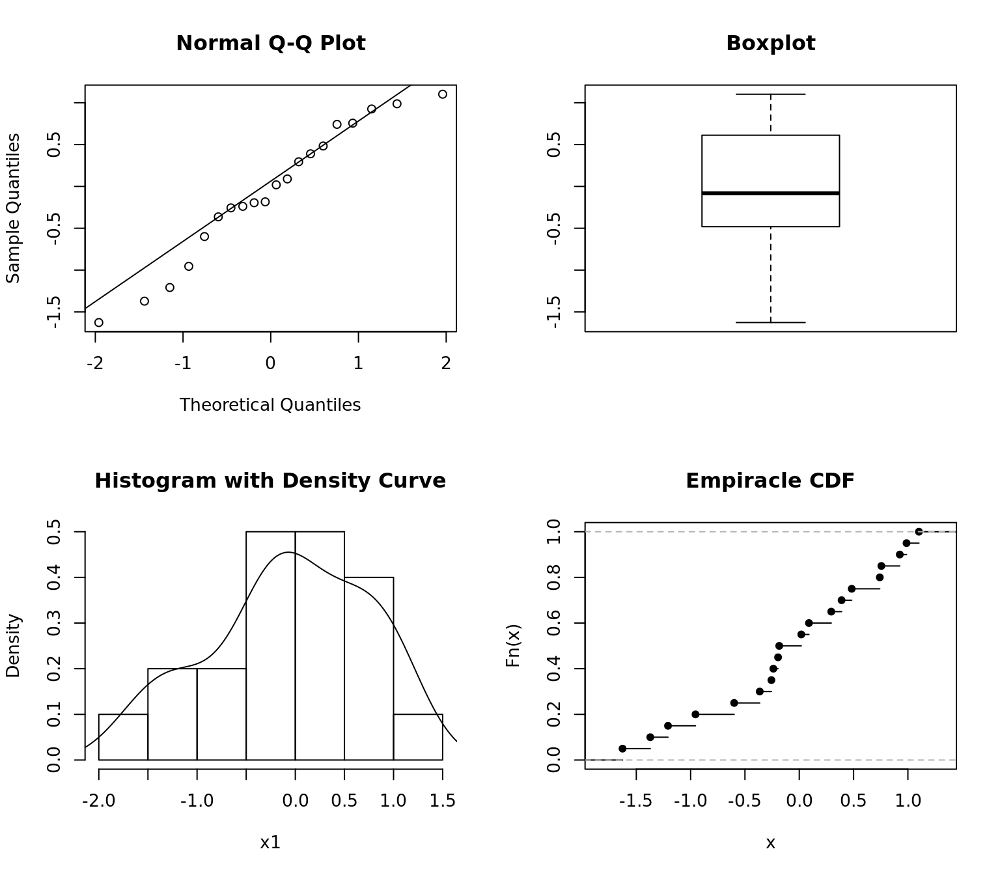

Statistical Methods
Continuous Distribution Fitting
Techniques Used
- Assessing Distributions Visually
- Formal Tests for Distribution Fit
- Maximum Likelihood calculation
Normal Distribution
library(nortest)
library(MASS)
## Draw some random data
set.seed(10)
x1 = rnorm(20)
## Distribution plots
par(mfrow = c(2, 2))
qqnorm(x1)
qqline(x1)
boxplot(x1, main = "Boxplot")
hist(x1, freq = FALSE, main = "Histogram with Density Curve")
lines(density(x1))
plot(ecdf(x1), main = "Empiracle CDF")
QQ plot indicates the data might be normal by remaining close to the line. The Box plot, histogram, and density curve all support this assumption.
Formal tests all agree that the data are from the normal distribution. Shapiro Wilk is considered the best for test for testing normality.
## Are the data from a normal distribution?
## Shapiro-Wilk Test
shapiro.test(x1)
Shapiro-Wilk normality test
data: x1
W = 0.95643, p-value = 0.4753## Anderson Darling Test
ad.test(x1)
Anderson-Darling normality test
data: x1
A = 0.27523, p-value = 0.6216 ## Kolmogorov-Smirnoff Test
ks.test(x1, 'pnorm')
One-sample Kolmogorov-Smirnov test
data: x1
D = 0.13528, p-value = 0.8109
alternative hypothesis: two-sidedChi-squared Distribution
## Draw some random data
set.seed(10)
x2 = rchisq(n = 20, 2)
## Estimate the DF parameter by maximum likelihood
fitdistr(x = x2, dchisq, start = list(df = 2)) df
1.8140625
(0.3244201)## Input the estimate from MLE
ks.test(x = x2, y = pchisq, df = 1.8140625)
One-sample Kolmogorov-Smirnov test
data: x2
D = 0.15608, p-value = 0.6584
alternative hypothesis: two-sided## Distribution plots
par(mfrow = c(2, 2))
qqplot(qchisq(ppoints(20), df = 1.8140625), x2, main = "QQ Plot")
qqline(x2, distribution = function(p) qchisq(p, df = 1.8140625))
boxplot(x2, main = "Boxplot")
hist(x2, freq = FALSE, main = "Histogram with Density Curve")
lines(density(x2))
plot(ecdf(x2), main = "Empiracle CDF")
Calculating the MLE manually
## Generate data from the exponential distribution with mean = 1/5
set.seed(1000)
X = rexp(n = 20, rate = 5)
## sample size and range of betas to test
n = 20; beta = seq(.01, .5, by = .01)
## Liklihood function
Likelihood = (1/beta)^n * exp(-1/beta * sum(X))
## Maximum Likelihood
(mle = max(Likelihood))[1] 276565.8(mle.beta = beta[which(Likelihood == mle)])[1] 0.2## Statistical test for how well the specified distribution fits the data
ks.test(x = X, y = "pexp", rate = 1/mle.beta)
One-sample Kolmogorov-Smirnov test
data: X
D = 0.1475, p-value = 0.7232
alternative hypothesis: two-sidedpar(mfrow = c(1, 2))
## Plot the maximum likelihood
plot(x = beta, y = Likelihood, type = "l", main = "Maximum Likelihood", lwd = 2)
abline(h = mle, v = mle.beta, lty = 2)
## QQplot for assessing distribution fit visually
qqplot(qexp(ppoints(10), rate = 1/mle.beta), X, xlab = "QQ", main = "QQ Plot")
qqline(X, distribution = function(p) qexp(p, rate = 1/mle.beta))